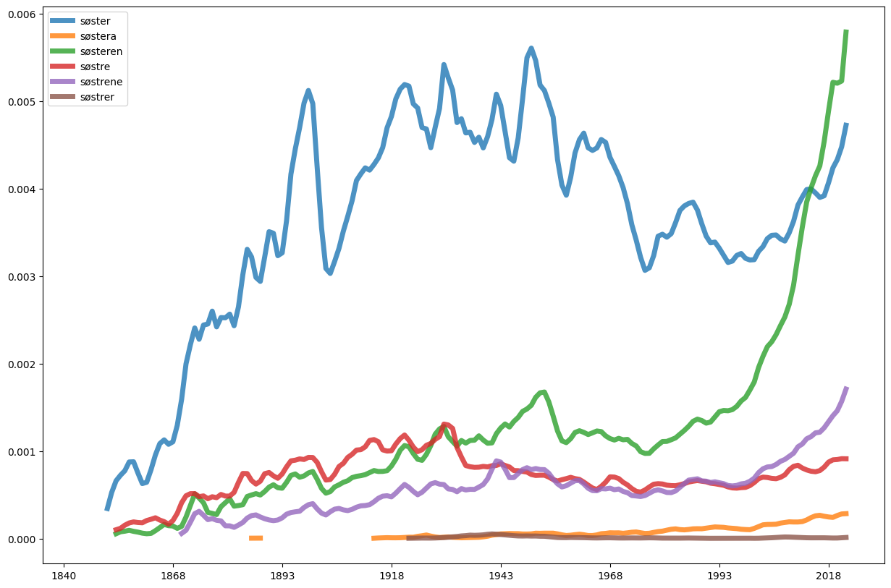

Ordparadigmer med wordbank
Contents

1.13. Ordparadigmer med wordbank#
wordbank er en pakke i dhlab som lar oss hente ut ordparadigmer.
from dhlab.wordbank.wordbank import WordForm, WordLemma, WordParadigm
from dhlab.ngram.ngram import Ngram
WordParadigm("meter").paradigms
| 0 | 1 | |
|---|---|---|
| 0 | subs | [meter, meteren, meterne] |
WordForm("meter").forms
| 0 | |
|---|---|
| 0 | subst mask appell ent ub normert |
| 1 | subst mask appell fl ub normert |
# Finn lemma
WordLemma("meteren").lemmas
| 0 | 1 | |
|---|---|---|
| 0 | subs | meter |
# Vi kan også legge dette i en variabel, som vi kan se på
søster = WordParadigm("søster")
søster.paradigms
| 0 | 1 | |
|---|---|---|
| 0 | subs | [søster, søstera, søsteren, søstre, søstrene, ... |
# Eksempel med ord som er både adjektiv, substantiv og verb
fisker = WordParadigm("fisker")
fisker.paradigms
| 0 | 1 | |
|---|---|---|
| 0 | adj | [fiska, fiskede, fiskende, fisket, fiskete] |
| 1 | subs | [fisk, fisken, fiskene, fisker, fiska, fiske, ... |
| 2 | verb | [fisk, fiska, fiske, fisker, fiskes, fisket] |
1.13.1. 1.1. N-gram for ordparadigmene#
Her har vi en funksjon som viser ngram for ordene i word_paradigm, paradigme_ngram.
y= definerer hvilken av ordgruppene vi får ut. Default er satt til 0.
z= her kan vi angi ord utenfor paradigmet som vi også ønsker å undersøke.
søster.paradigms.loc[0, 1]
['søster', 'søstera', 'søsteren', 'søstre', 'søstrene', 'søstrer']
Ngram(søster.paradigms.loc[0,1], from_year=1840).plot(smooth=5, alpha=0.8, lw=5)
